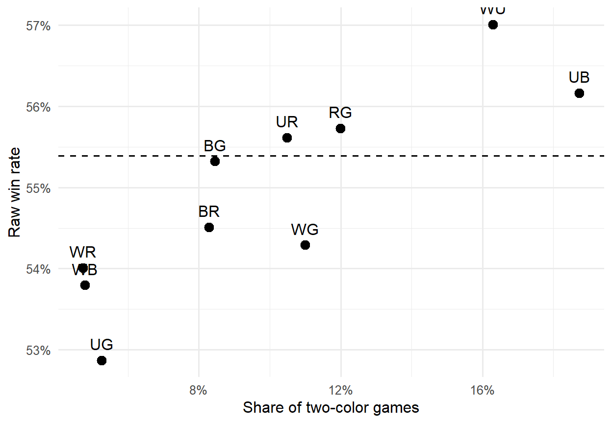
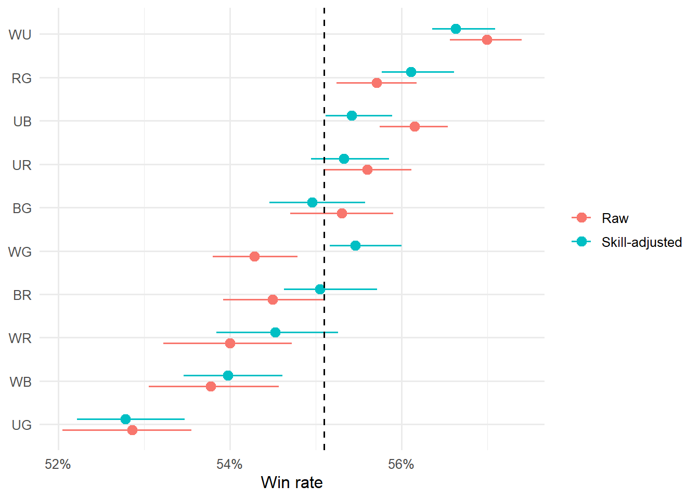
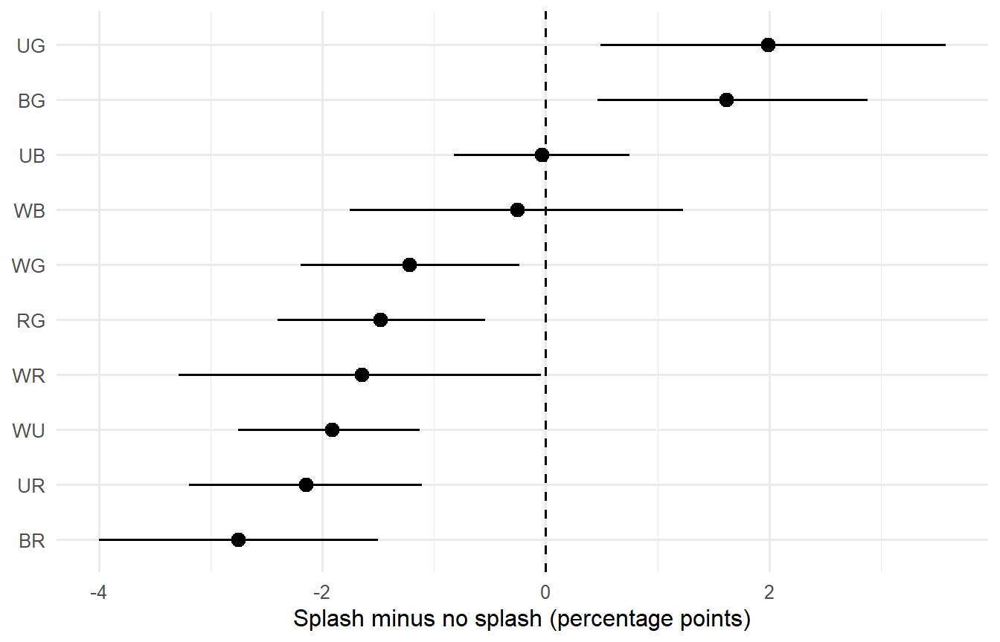
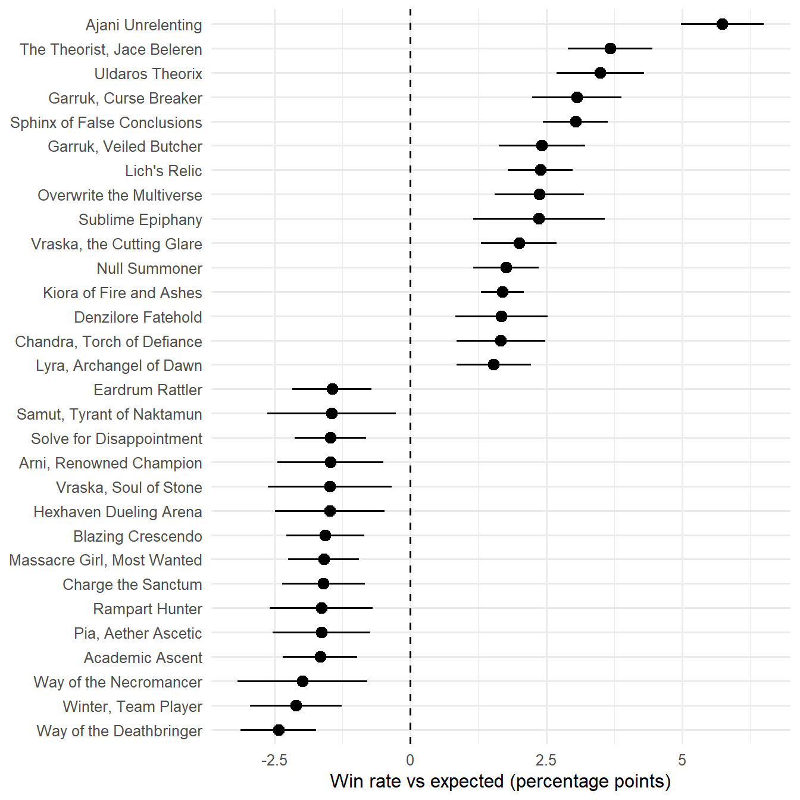
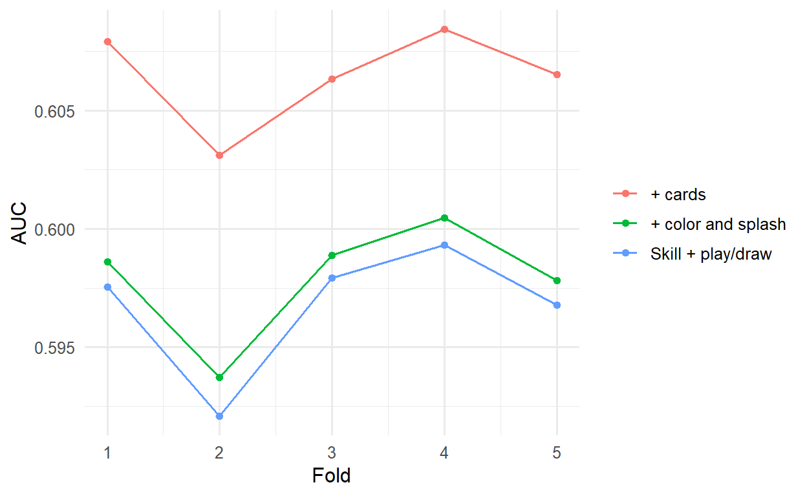

games |>
filter(nchar(main_colors) == 2) |>
group_by(main_colors) |>
summarise(
games = n(),
drafts = n_distinct(draft_id),
wr = mean(as.integer(won), na.rm = TRUE)
) |>
arrange(desc(wr)) |>
collect()Color, Splash, and Cards: What Predicts Winning in Magic: The Gathering Draft?
STAT 02511 Final Project: Reality Fracture (FRA) Premier Draft
Question
In Magic: The Gathering draft, players build a deck from cards they pick during the draft. Two choices shape most decks: which two colors to play, and whether to “splash” a third color for a few extra cards. This project asks:
- Which color pairs, and which splash colors, are associated with the highest win rates, and does the “best” choice hold up beyond random noise and differences in player skill?
- Do individual cards skew win rate, or is winning mostly a color-based effect?
Data
The data are the public 17Lands game-level records for Premier Draft in Reality Fracture (FRA). The file has one row per game, with the outcome, the deck’s colors, player and opponent skill indicators, and counts of every card in the deck, in the opening hand, and drawn.
After restricting to two-color decks, the analysis uses 327,430 games (76% of the 431,627 in the file) from 61,150 drafts. All 10 two-color pairs are included.
Colors are abbreviated W (white), U (blue), B (black), R (red), and G (green), so WU is white-blue.
Exploring the data
Before any modeling, a few queries show what the data look like. The file is queried in place with DuckDB, using dplyr verbs that dbplyr translates to SQL.
Calling show_query() on a simpler version of this pipeline prints the SQL that actually runs:
SELECT main_colors, COUNT(*) AS n
FROM games_keyed
WHERE (LENGTH(main_colors) = 2.0)
GROUP BY main_colorsThe first thing the queries show is that deck color is not evenly distributed. UB is the most played pair, with 18.7% of two-color games, while WR is the least played, with 4.7%. Figure 1 asks whether the pairs players choose most are also the ones that win most.
Show code
pop <- pairs_raw |> mutate(share = games / sum(games))
avg_wr <- weighted.mean(pop$wr, pop$games)
ggplot(pop, aes(x = share, y = wr, label = main_colors)) +
geom_hline(yintercept = avg_wr, linetype = "dashed") +
geom_point(size = 3) +
geom_text(vjust = -0.9) +
scale_x_continuous(labels = scales::percent) +
scale_y_continuous(labels = scales::percent) +
labs(x = "Share of two-color games", y = "Raw win rate")
The correlation between a pair’s popularity and its win rate is 0.86 across the 10 pairs, so popularity alone does not tell you which colors are best. Two other facts stand out before any modeling: the average player here wins 55.1% of games, so this is a stronger-than-average group, and being on the play wins 57.8% of games versus 52.9% on the draw. That is already a larger gap than between most color pairs, which is why every later model controls for it.
The rest of the project builds on this: which colors win, whether that survives a control for player skill, how splashing changes things, and finally whether the cards inside the deck matter more than its colors.
Headline findings
- Color matters, modestly. WU has the highest skill-adjusted win rate at 56.6% and is the best pair in 96% of bootstrap resamples. The gap between the best and worst pair is about 3.9 percentage points.
- Skill adjustment barely changes the color ranking. Three different skill controls give nearly the same spread across pairs (3.9 to 3.9 points).
- Splashing costs win rate. After adjusting for skill, splash decks win about 1.8 points less than non-splash decks, and the splash penalty is clearly negative for 6 of 10 pairs.
- Cards add more predictive information than color. On held-out drafts, adding card identity improves log loss about 7.9 times as much as adding the color pair, once skill is accounted for.
See Methods for how these were estimated, Results for the full tables and figures, and Discussion for limitations.
Methods
Data and querying
The raw game file is about 2 GB, so it is converted once to a parquet file and queried with DuckDB. The queries are written with dplyr through dbplyr, which translates the verbs to SQL and only pulls data into R when collect() is called.
games <- tbl(con, "games_keyed")
pairs_raw <- games |>
filter(nchar(main_colors) == 2) |>
group_by(main_colors) |>
summarise(
games = n(),
drafts = n_distinct(draft_id),
wr = mean(as.integer(won), na.rm = TRUE)
) |>
filter(games >= min_games) |>
arrange(desc(wr)) |>
collect()Variables and filtering
- Outcome:
won(1 if the player won the game). - Deck color:
main_colors, restricted to two-color decks. Every pair had at least 1,000 games. - Splash: a deck has a splash if
splash_colorsis not empty (47% of modeled games). - Play or draw:
on_play. The win rate is 57.8% on the play and 52.9% on the draw, so it is always a control. - Skill: the player’s historical win-rate bucket and games-played bucket. Rank has 7 tiers and is used as a robustness check. Opponent rank has 1 distinct value in this file, so it cannot be used.
Resampling by draft
Games from the same draft share one deck and one player, so they are not independent. All uncertainty in this project comes from bootstrapping drafts, not games: each replicate draws drafts with replacement and recomputes the statistic from the games in those drafts.
Win rates are first aggregated to one row per draft and color pair. Each replicate is a vector of draft counts drawn from a multinomial distribution, and the resampled win rate is a ratio of weighted sums, so no data frame is rebuilt in the loop.
counts <- rmultinom(b, n_d, rep(1 / n_d, n_d))
w <- crossprod(counts, Wm) # resampled wins per pair
g <- crossprod(counts, Gm) # resampled games per pair
boot_wr[rows, ] <- w / gWith 2,000 replicates, I report 95% percentile intervals and also how often each pair ranks first, which answers directly whether the top pair is stable.
Adjusting for player skill
A logistic regression estimates the win probability from color pair, splash, on the play, and the two skill indicators. Standard errors are cluster-robust by draft.
m_adj <- glm(
won ~ pair + has_splash + on_play +
user_game_win_rate_bucket + user_n_games_bucket,
family = binomial, data = model_df
)
coeftest(m_adj, vcov = vcovCL, cluster = ~draft_id)Adjusted win rates for each pair come from standardization: predict every game in the data as if it had been played with that pair, then average. To get intervals, the model is refit on 200 draft resamples, using draft resample counts as case weights.
Because the win-rate bucket partly reflects the games being analyzed, two alternative controls are compared: experience only (games played) and rank.
Splash
Win rates by pair and splash color use the same draft bootstrap. For each pair, the splash effect is the win rate with any splash minus the win rate with none, with a bootstrap interval.
Individual cards
For each card with at least 2,000 games in deck (262 cards, excluding basic lands), two quantities are estimated using the residuals of the skill-adjusted color model (observed win minus predicted win probability):
- In deck vs. expected: the average residual in decks containing the card.
- Drawn vs. not drawn: within decks containing the card, the difference in average residual between games where it was seen (opening hand or drawn) and games where it was not.
Both are bootstrapped by draft with 1,000 replicates. P-values use the bootstrap standard error and a Benjamini-Hochberg correction for testing many cards.
Because extreme estimates among hundreds of cards are partly luck, the estimates are shrunk toward the average with an empirical Bayes (random effects) model. The true spread of card effects comes from a DerSimonian-Laird estimate, which removes sampling noise from the observed spread.
Color versus cards: out-of-sample comparison
To compare how much color and cards each help predict wins, three models are fit and evaluated on held-out drafts using 5-fold cross-validation, with all games from a draft in the same fold:
- skill and on the play only,
- plus color pair and splash,
- plus an indicator for each card, fit with an elastic-net penalty (
glmnet) on the cards only.
Each step is scored with AUC and log loss. Intervals for the log loss gains come from a draft-level bootstrap of the out-of-fold predictions.
Reproducibility
All analysis code is in explore.R in the project repository. It runs top to bottom with a fixed random seed (2511), and writes the small result files that these pages read. The raw data are not stored in the repository because of their size.
Results
Which color pair wins?
Table 1 shows each pair’s win rate before and after adjusting for player skill, with 95% intervals from resampling drafts. “P(best)” is the share of bootstrap resamples in which that pair had the highest win rate.
Show code
pair_tbl <- final_compare |>
left_join(pairs_raw |> rename(pair = main_colors), by = "pair") |>
transmute(
Pair = pair,
Games = big(games),
`Raw win rate (95% CI)` = ci_str(raw_wr, raw_lo, raw_hi),
`Adjusted win rate (95% CI)` = ci_str(adj_wr, adj_lo, adj_hi),
`P(best), raw` = pct(raw_p_best, 0),
`P(best), adjusted` = pct(adj_p_best, 0)
)
kable(pair_tbl, align = "lrrrrr")| Pair | Games | Raw win rate (95% CI) | Adjusted win rate (95% CI) | P(best), raw | P(best), adjusted |
|---|---|---|---|---|---|
| WU | 53,349 | 57.0% (56.6%, 57.4%) | 56.6% (56.4%, 57.1%) | 100% | 96% |
| RG | 39,277 | 55.7% (55.2%, 56.2%) | 56.1% (55.8%, 56.6%) | 0% | 4% |
| WG | 36,019 | 54.3% (53.8%, 54.8%) | 55.5% (55.2%, 56.0%) | 0% | 0% |
| UB | 61,335 | 56.1% (55.7%, 56.5%) | 55.4% (55.1%, 55.9%) | 0% | 0% |
| UR | 34,352 | 55.6% (55.1%, 56.1%) | 55.3% (54.9%, 55.9%) | 0% | 0% |
| BR | 27,147 | 54.5% (53.9%, 55.1%) | 55.0% (54.6%, 55.7%) | 0% | 0% |
| BG | 27,664 | 55.3% (54.7%, 55.9%) | 55.0% (54.5%, 55.6%) | 0% | 0% |
| WR | 15,505 | 54.0% (53.2%, 54.7%) | 54.5% (53.8%, 55.3%) | 0% | 0% |
| WB | 15,667 | 53.8% (53.1%, 54.6%) | 54.0% (53.5%, 54.6%) | 0% | 0% |
| UG | 17,218 | 52.9% (52.0%, 53.6%) | 52.8% (52.2%, 53.5%) | 0% | 0% |
WU is the top pair after adjustment, at 56.6% (95% interval 56.4% to 57.1%). Before adjustment the top pair was WU, best in 100% of resamples.
Show code
final_compare |>
select(pair, raw_wr, raw_lo, raw_hi, adj_wr, adj_lo, adj_hi) |>
pivot_longer(-pair, names_to = c("type", ".value"), names_sep = "_") |>
mutate(
type = recode(type, raw = "Raw", adj = "Skill-adjusted"),
pair = reorder(pair, wr)
) |>
ggplot(aes(x = wr, y = pair, color = type)) +
geom_pointrange(aes(xmin = lo, xmax = hi), position = position_dodge(width = 0.5)) +
geom_vline(xintercept = facts$overall_wr, linetype = "dashed") +
scale_x_continuous(labels = scales::percent) +
labs(x = "Win rate", y = NULL, color = NULL)
Does skill explain the color differences?
The best-to-worst spread across pairs is 4.1 points raw and 3.9 points after adjustment, so most of the difference between pairs is not a skill artifact. Table 2 compares the pair win rates under alternative skill controls. The win-rate bucket may partly reflect the games being studied, so the experience-only and rank controls act as checks.
Show code
skill_tbl <- rank_compare |>
transmute(
Pair = pair,
Raw = pct(raw_wr),
`Experience only` = pct(adj_exp),
`Win-rate bucket` = pct(adj_bucket),
Rank = ifelse(is.na(adj_rank), "n/a", pct(adj_rank))
)
kable(skill_tbl, align = "lrrrr")| Pair | Raw | Experience only | Win-rate bucket | Rank |
|---|---|---|---|---|
| WU | 57.0% | 57.0% | 56.6% | 57.0% |
| RG | 55.7% | 55.6% | 56.1% | 55.6% |
| WG | 54.3% | 54.3% | 55.5% | 54.2% |
| UB | 56.1% | 56.2% | 55.4% | 56.3% |
| UR | 55.6% | 55.6% | 55.3% | 55.6% |
| BR | 54.5% | 54.3% | 55.0% | 54.3% |
| BG | 55.3% | 55.4% | 55.0% | 55.4% |
| WR | 54.0% | 53.9% | 54.5% | 53.8% |
| WB | 53.8% | 53.7% | 54.0% | 53.7% |
| UG | 52.9% | 53.1% | 52.8% | 53.1% |
The spread is 3.9 points with experience only, 3.9 with the win-rate bucket, and 3.9 points with rank, so the conclusion does not depend on the skill proxy.
Splash colors
After adjusting for skill and play/draw, having a splash changes the log-odds of winning by -0.073 (robust SE 0.007), roughly -1.8 pts.
Figure 3 shows splash minus no-splash win rate for each pair. The effect is clearly negative for 6 of 10 pairs and clearly positive for 2.
Show code
splash_diff |>
mutate(pair = reorder(pair, diff)) |>
ggplot(aes(x = diff, y = pair)) +
geom_pointrange(aes(xmin = lo, xmax = hi)) +
geom_vline(xintercept = 0, linetype = "dashed") +
scale_x_continuous(labels = function(x) paste0(100 * x)) +
labs(x = "Splash minus no splash (percentage points)", y = NULL)
Table 3 lists the highest-win-rate pair and splash combinations. These cells are small and are the best of many, so their intervals are wide and the top entries are likely overstated.
Show code
splash_detail |>
slice_head(n = 10) |>
transmute(
`Pair + splash` = cell,
Games = big(games),
`Win rate (95% CI)` = ci_str(wr, lo, hi)
) |>
kable(align = "lrr")| Pair + splash | Games | Win rate (95% CI) |
|---|---|---|
| WU + BG | 1,362 | 58.5% (55.9%, 61.0%) |
| WU + none | 27,739 | 57.9% (57.3%, 58.5%) |
| UB + G | 14,032 | 57.4% (56.6%, 58.2%) |
| BG + U | 6,330 | 57.2% (56.0%, 58.4%) |
| WB + UG | 476 | 56.9% (52.2%, 61.0%) |
| WU + B | 12,646 | 56.6% (55.7%, 57.5%) |
| UR + none | 18,773 | 56.6% (55.9%, 57.3%) |
| UB + WR | 671 | 56.5% (53.1%, 59.7%) |
| RG + none | 22,822 | 56.3% (55.7%, 57.0%) |
| BR + UG | 470 | 56.2% (51.6%, 60.8%) |
Card effects
262 cards had enough games to analyze. Each card’s effect is its win rate relative to what the skill-adjusted color model predicts. 125 cards have a significant in-deck effect after a Benjamini-Hochberg correction, and 134 still have a shrunken 95% interval that excludes zero.
After removing sampling noise, the true spread of card effects (standard deviation) is 0.87 points, compared with 1.08 points across color pairs.
Show code
card_results |>
slice_head(n = 10) |>
transmute(
Card = card,
Games = big(deck_games),
`Raw` = pp(deck_excess),
`Shrunken (95% interval)` = sprintf("%s (%s, %s)", pp(deck_shrunk), pp(deck_shrunk_lo), pp(deck_shrunk_hi)),
`BH q` = formatC(deck_q, format = "g", digits = 2)
) |>
kable(align = "lrrrr")| Card | Games | Raw | Shrunken (95% interval) | BH q |
|---|---|---|---|---|
| Ajani Unrelenting | 9,793 | +7.2 | +5.7 (+5.0, +6.5) | 1.6e-58 |
| The Theorist, Jace Beleren | 9,326 | +4.6 | +3.7 (+2.9, +4.4) | 9.7e-24 |
| Uldaros Theorix | 9,080 | +4.5 | +3.5 (+2.7, +4.3) | 2.2e-20 |
| Garruk, Curse Breaker | 8,080 | +4.0 | +3.1 (+2.2, +3.9) | 2.1e-15 |
| Sphinx of False Conclusions | 19,662 | +3.5 | +3.0 (+2.4, +3.6) | 1.5e-24 |
| Garruk, Veiled Butcher | 9,225 | +3.1 | +2.4 (+1.6, +3.2) | 4.2e-10 |
| Lich’s Relic | 19,148 | +2.7 | +2.4 (+1.8, +3.0) | 2.1e-15 |
| Overwrite the Multiverse | 8,892 | +3.1 | +2.4 (+1.5, +3.2) | 2.7e-09 |
| Sublime Epiphany | 2,257 | +4.8 | +2.4 (+1.2, +3.6) | 6.7e-07 |
| Vraska, the Cutting Glare | 13,869 | +2.4 | +2.0 (+1.3, +2.7) | 1.5e-08 |
Show code
card_results |>
arrange(deck_shrunk) |>
slice_head(n = 10) |>
transmute(
Card = card,
Games = big(deck_games),
`Raw` = pp(deck_excess),
`Shrunken (95% interval)` = sprintf("%s (%s, %s)", pp(deck_shrunk), pp(deck_shrunk_lo), pp(deck_shrunk_hi)),
`BH q` = formatC(deck_q, format = "g", digits = 2)
) |>
kable(align = "lrrrr")| Card | Games | Raw | Shrunken (95% interval) | BH q |
|---|---|---|---|---|
| Way of the Deathbringer | 12,485 | -2.9 | -2.4 (-3.1, -1.7) | 2.2e-12 |
| Winter, Team Player | 8,398 | -2.8 | -2.1 (-3.0, -1.3) | 3.1e-07 |
| Way of the Necromancer | 2,942 | -3.9 | -2.0 (-3.2, -0.8) | 3.4e-05 |
| Academic Ascent | 11,475 | -2.0 | -1.7 (-2.3, -1.0) | 2.6e-06 |
| Pia, Aether Ascetic | 6,840 | -2.3 | -1.6 (-2.5, -0.7) | 0.00016 |
| Rampart Hunter | 6,137 | -2.4 | -1.6 (-2.6, -0.7) | 0.00026 |
| Charge the Sanctum | 9,979 | -2.0 | -1.6 (-2.4, -0.8) | 3.2e-05 |
| Massacre Girl, Most Wanted | 17,175 | -1.9 | -1.6 (-2.2, -0.9) | 2.6e-06 |
| Blazing Crescendo | 13,136 | -1.9 | -1.6 (-2.3, -0.8) | 2e-05 |
| Hexhaven Dueling Arena | 4,804 | -2.3 | -1.5 (-2.5, -0.5) | 0.0015 |
Show code
bind_rows(
slice_max(card_results, deck_shrunk, n = 15),
slice_min(card_results, deck_shrunk, n = 15)
) |>
ggplot(aes(x = deck_shrunk, y = reorder(card, deck_shrunk))) +
geom_pointrange(aes(xmin = deck_shrunk_lo, xmax = deck_shrunk_hi)) +
geom_vline(xintercept = 0, linetype = "dashed") +
scale_x_continuous(labels = function(x) paste0(100 * x)) +
labs(x = "Win rate vs expected (percentage points)", y = NULL)
Comparing games where a card was drawn against games where it was in the deck but not drawn gives a larger spread (2.76 points, with 175 cards significant). This measure is biased upward, because longer games draw more cards and game length is related to winning, so it should be read as suggestive.
Color versus cards
Table 6 shows how well each model predicts wins on held-out drafts, and Table 7 shows how much each step improves on the previous one.
Show code
pred_compare |>
transmute(
Model = model,
`AUC` = sprintf("%.4f", auc),
`Log loss` = sprintf("%.5f", log_loss)
) |>
kable(align = "lrr")| Model | AUC | Log loss |
|---|---|---|
| skill + on_play | 0.5967 | 0.67147 |
| + color pair and splash | 0.5979 | 0.67114 |
| + card indicators | 0.6065 | 0.66857 |
Show code
cv_gains |>
transmute(
Step = step,
`AUC gain` = sprintf("%+.4f (%+.4f, %+.4f)", auc_gain, auc_lo, auc_hi),
`Log loss gain` = sprintf("%.5f (%.5f, %.5f)", logloss_gain, ll_lo, ll_hi)
) |>
kable(align = "lrr")| Step | AUC gain | Log loss gain |
|---|---|---|
| adding color pair + splash | +0.0012 (+0.0008, +0.0015) | 0.00033 (0.00024, 0.00041) |
| adding card indicators | +0.0086 (+0.0075, +0.0096) | 0.00257 (0.00239, 0.00274) |
Adding the color pair improves log loss by 3.3^{-4} and adding cards improves it by 0.0026, about 7.9 times as much. Both gains are clearly above zero, and the card gain is larger than the color gain in 5 of 5 folds (Figure 5).
Show code
cv_folds |>
select(fold, auc0, auc1, auc2) |>
pivot_longer(-fold, names_to = "model", values_to = "auc") |>
mutate(model = recode(model,
auc0 = "Skill + play/draw",
auc1 = "+ color and splash",
auc2 = "+ cards"
)) |>
ggplot(aes(x = fold, y = auc, color = model)) +
geom_line() +
geom_point() +
labs(x = "Fold", y = "AUC", color = NULL)
Discussion
What the results say
Color pair. WU has the highest win rate, and the ranking holds up: it stays on top after adjusting for skill and is the best pair in 96% of draft resamples. Still, the gap between the best and worst pair is only about 3.9 percentage points. Skill adjustment barely changes that gap, and the result is the same whether skill is measured by experience, win-rate bucket, or rank, so the color differences are not just stronger players favoring certain colors.
Splash. Splashing a third color is associated with a lower win rate after adjusting for skill, about 1.8 points on average. The raw gap was smaller than the adjusted gap, which suggests stronger players splash more often and the raw comparison understates the cost. The effect is not identical across pairs, and some pair and splash combinations have too few games to say much.
Cards. Card identity carries more predictive information than color pair. Once skill and play/draw are known, adding the color pair improves held-out prediction slightly, and adding cards improves it about 7.9 times as much. The typical card’s true effect (standard deviation about 0.9 points) is similar in size to the differences between color pairs, and there are hundreds of cards. So winning in this format depends more on which cards a deck contains than on which two colors it plays.
Scale. Even the best predictive model here separates winners from losers only a little better than a coin flip (AUC about 0.606). Player skill and being on the play (57.8% vs. 52.9% on the draw) matter at least as much as deck construction, and most of a single game’s result is luck.
Limitations
- Observational data. Everything here is an association. Players choose their colors, splashes, and cards, and those choices are related to skill and to each other.
- Skill is measured imperfectly. The win-rate bucket may partly reflect the games being analyzed, and opponent rank had no variation in this file. Results that agree across several controls are reassuring, but they do not rule out unmeasured skill differences.
- Self-selected players. 17Lands users are not a random sample of Arena players, so results describe this group.
- Card effects mix card power and context. Within a color pair, a card’s effect also reflects the archetype it belongs to, how often it is a bomb, and who plays it. The drawn-versus-not-drawn comparison is also biased by game length.
- Many comparisons. With 262 cards, some extreme estimates are partly luck. Shrinkage and the false discovery correction reduce this but do not remove it.
- Approximate intervals. The AUC intervals come from only five folds, and the log loss intervals treat the out-of-fold predictions as fixed, so both ignore some model refitting variation.
- One set. The patterns may not hold for other sets, which have different cards and archetypes.
Possible extensions
- Add opponent colors to study matchups between color pairs.
- Fit card effects within each color pair to see whether a card is strong everywhere or only in one archetype.
- Use the pick-level draft data to study how early picks relate to final deck strength.
- Repeat the analysis on another set to see which findings replicate.